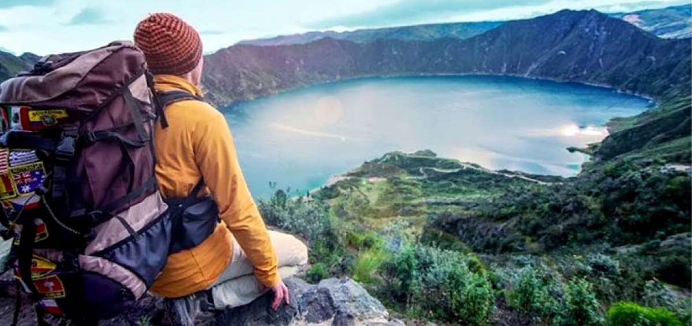
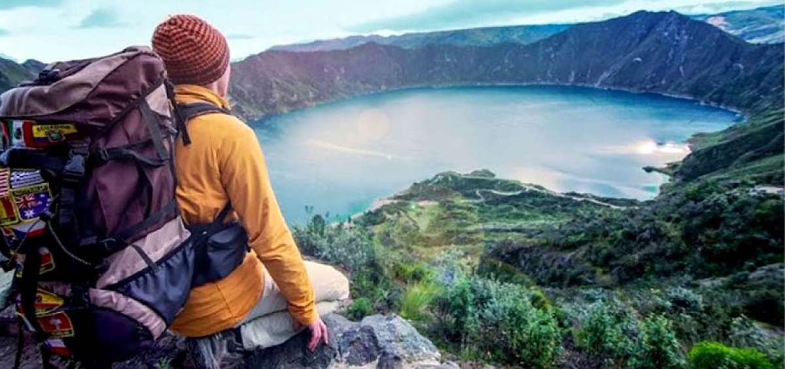


 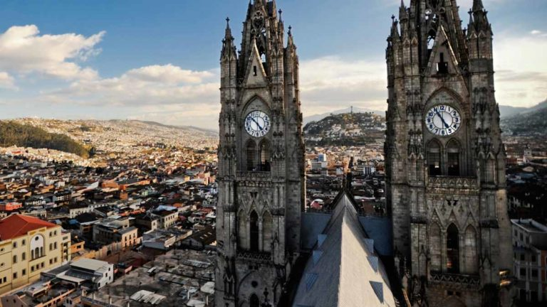
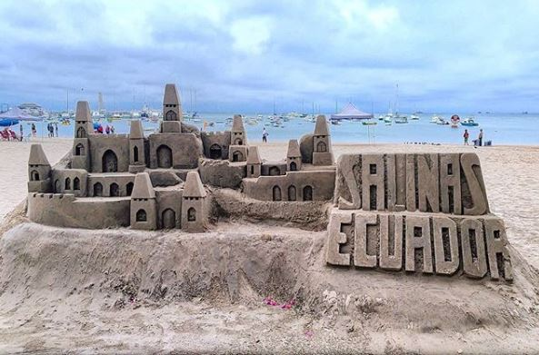
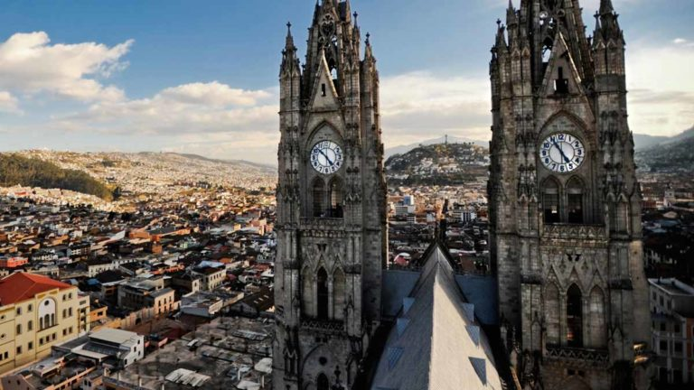
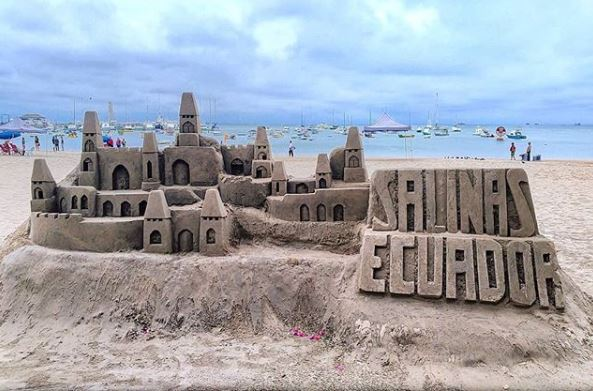


 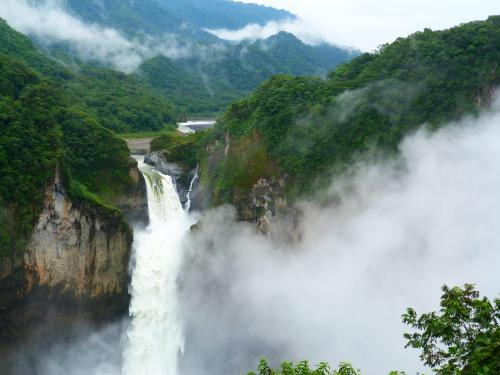
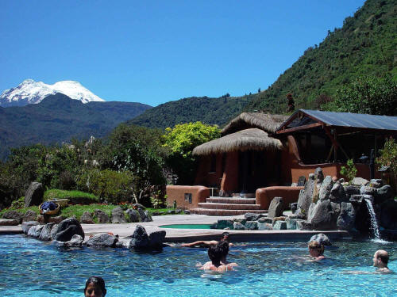
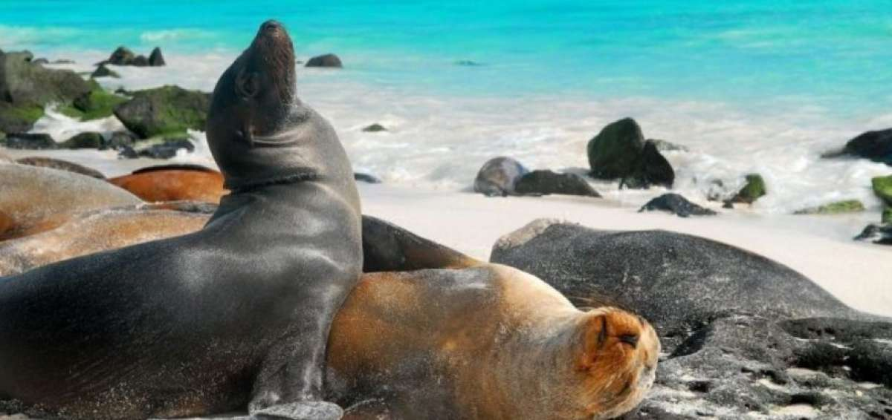
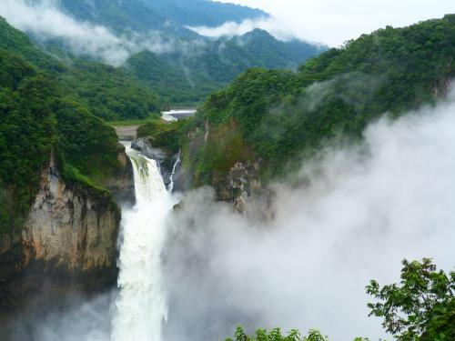
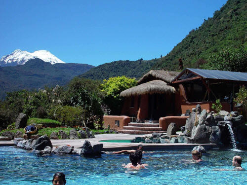
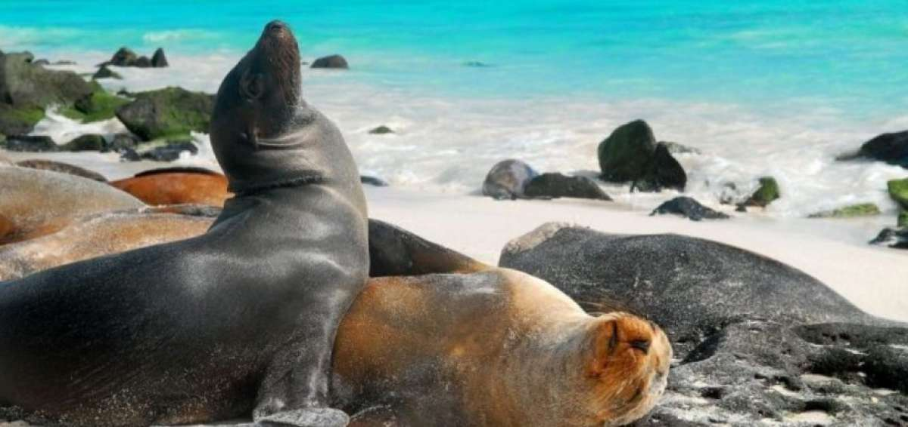
Ecuador Turismo
Límites de Ecuador
¿Cómo es el clima en el Ecuador?
Temperaturas promedio por región:
Costa: entre 22°C a 26°C
Andes: entre 13°C y 16°C, existe diferencia de temperatura entre el día y la noche.
Amazonía: entre los 24°C y 30°C.
Galápagos: entre 17°C y 25°C, los meses más lluviosos son de enero a abril.
Lugares de interés turístico Natural en Ecuador
Ciudades más importantes del Ecuador
Quito Ecuador
La capital de los ecuatorianos es Quito, en ésta ciudad se encuentra los cuatro poderes del estado. Y el palacio de Carondelet donde el presidente de la República ejerce su mandato. Quito es reconocida por la Unesco como Patrimonio Cultural de la Humanidad. Adicionalmente ha sido ganadora como el mejor destino turístico de los premios World Travel Word. En éste lugar está marcado por las tradiciones y leyendas y tiene un gran legado cultural.
Guayaquil Ecuador
ciudad más poblada y puerto principal de Ecuador. Guayaquil se ha desarrollado como un destino turístico nacional e internacional, siendo sede de ferias y eventos internacionales. La zona del centro de la ciudad de Guayaquil es uno de los lugares más importantes para el turismo
Cuenca Ecuador
considerada una de las ciudades más bellas del Ecuador, por su arquitectura colonial y republicana; ideal para turismo cultural, religioso, gastronómico o descanso. Declarada patrimonio cultural de la Humanidad por la Unesco Otras ciudades importantes son: Baños, Manta, Salinas, Loja Ecuador, Machala, Santo Domingo, Salinas, Santa Cruz y Tena.
Fiestas Populares de Ecuador
21 de Junio:La Fiesta del Inti Raymi o mejor conocido como solsticio de verano se celebra en la sierra ecuatoriana para dar gracias al Inti -Dios Sol- por la abundancia en las cosechas y a la Pachamama (Madre Tierra) por cuidar y bendecir cultivos. La fiesta popular se caracteriza por tener danzantes que llevan sus cabezas decoradas con espejos, lentejuelas y plumas
La Mama Negra: Conocida como Santísima Tragedia. Celebrada en Latacunga, provincia de Cotopaxi. Una ceremonia mágica que devela la vida de diferentes pueblos concebidos en su mestizaje. Se realiza primero en el mes de septiembre, como una fiesta de devotos y la segunda fecha se realiza en la primera semana de noviembre como aniversario de independencia o fiesta política de Latacunga
Otras fiestas: Carnaval, Carnaval de Guaranda, Diablada en Pillaro, Fiesta de las Flores y de las Frutas en Ambato. Ver detalle de fiestas mes a mes en Fiestas Populares Ecuador, Feriados Ecuador, Fiestas Religiosas Ecuador.